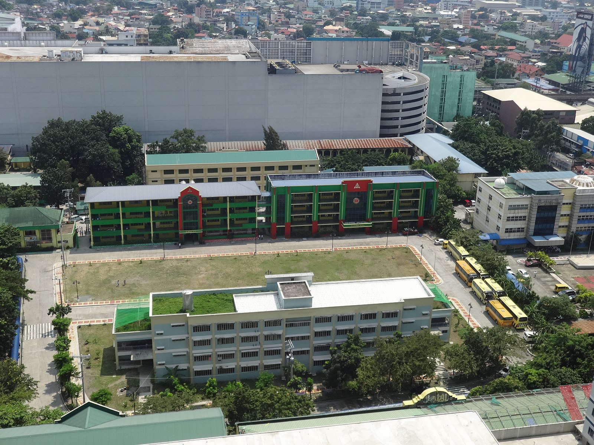

San Francisco High School (SFHS) is a public
educational institution located in Bago Bantay, Quezon City.
Want to know more about the location?
HISTORY: On June 9, 1954 San Francisco High School was born in the midst of a small but busy community. It was first an annex of the Quezon City High School with 90 first year students and 6 members of the faculty to start with. Classes were housed in the rundown Pizano building along Morato St. At the start, San Francisco High School's future did not seem bright but inspired by the courage and determination of the administrators and the Parent-Teacher association presidents; they saw the fledging San Francisco High School grow to what it is today. On Sept. 30, 1958 San Francisco Annex gained its independence from the Quezon City High School. In the same year, the Superintendent of City Schools, Pablo P. Reyes approved its holding of the first graduation rites. To meet the growing population, San Francisco High School opened an Annex at Judge Juan Luna. However, later, that annex of SFHS acquired a 5,245 square meter lot through a Presidential proclamation of the late President Carlos P. Garcia in 1961. The enrollment had spiraled from 90 to 5,334 in 1970 and the original three sections of 90 students with 6 teachers were bolstered to 144 sections with 263 teachers in 1971. In November of the same year, the Q.C. Council approved resolution No. 10590 s 75, changing the name of the school, San Francisco High School to Don Mariano Marcos High School and was confirmed by a Division Memorandum No. 32 dated October 23, 1975. However, the original name of the school was adopted in October 1986 and up to the present it remains to be San Francisco High School.
Mission SFHS is committed to produce quality education to all through relevant curriculum realized by dedicated teachers who are technically competent and as shepherd of the students- mold their minds, hearts and souls for the glory of God. Vision SFHS - a school of excellence. envisioning to produce individuals with deep sense of nationalism, who are God fearing,globally competitive and embraced with positive attitudes that willenable them to seek the truth.